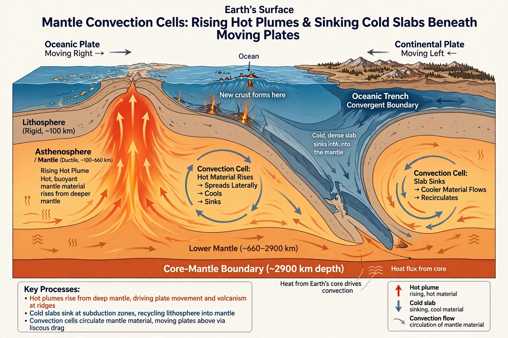

Mantle (geology)

Earth's mantle is the thick layer of silicate rock between the crust and the core, extending from a few kilometres beneath the oceans (about 30–70 km beneath continents) down to 2,900 kilometres depth. It makes up about two-thirds of Earth's mass and more than four-fifths of its volume.
Although solid, the mantle convects over geological time — hot rock rising, cold rock sinking — and this slow circulation is the engine of {L('Plate_tectonics')}.
Structure and composition
Seismic waves divide the mantle into the upper mantle (including the rigid lithospheric mantle that moves with the plates, and the weaker asthenosphere beneath), a transition zone marked by mineral phase changes around 410 and 660 kilometres depth, and the lower mantle, where the silicate mineral bridgmanite dominates. Near the base lies the enigmatic D″ layer, with structures that may be piles of ancient, dense material.
Mantle rock brought to the surface in ophiolites, xenoliths in volcanic rocks, and rare deep diamonds suggests a composition rich in olivine and pyroxene (peridotite), similar in broad terms throughout, with variations recording the history of melting and recycling.
Convection and plumes
Heated from below by the core and from within by radioactivity, the mantle overturns on timescales of hundreds of millions of years. Subducting slabs are its descending cold limbs; rising narrow plumes from deep in the mantle have been proposed to feed volcanic hotspots such as Hawaii and Iceland (see {L('Hotspot_(geology)','hotspot')}), though the depth and even existence of some plumes remains debated among geophysicists.
See also: Crust (geology) · Plate tectonics · Seismology · Subduction · Hotspot (geology) · Geology